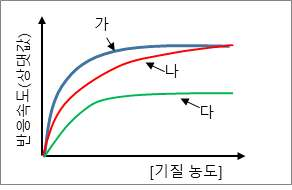
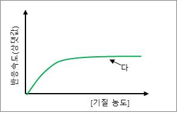

문제 3
단계1
저해제가 있을 경우 효소의 활성에 영향을 미친다. 다음 그래프에서 (가)는 저해제가 없을 때의 기질의 농도에 따른 반응속도를 나타낸 것이다. (나)와 (다)는 각각 어떤 저해제를 넣어 준 경우이며, 각각 어떻게 효소의 활성을 저해하는지 설명하시오.

단계2
위의 [단계1]의 그래프에서 (다)시험관 반응에 같은 효소 농도를 2배로 더 넣어 준 경우 예상되는 기질 농도에 따른 반응속도 그래프를 그려 보시오.

단계3
감자즙에는 카탈레이스라는 효소가 있어 과산화수소(\(\text{H}_2\text{O}_2\))를 산소와 물로 분해하는 반응을 촉매한다. 시험관 I, II, III에 아래 표와 같이 물질들을 섞어 준 후 발생하는 산소의 양을 측정하였을 때 산소가 많이 발생하는 순서대로 적고 그 이유를 설명하시오. 또, 이 실험을 통해 알 수 있는 과학적 사실은 무엇인가?
| 시험관 | I | II | III |
|---|---|---|---|
| 감자즙 | 0 mL | 2 mL | 2 mL |
| 5% \(\text{H}_2\text{O}_2\) | 30 mL | 30 mL | 30 mL |
| 5% NaOH | 0 mL | 0 mL | 2 mL |
| 증류수 | 10 mL | 8 mL | 6 mL |